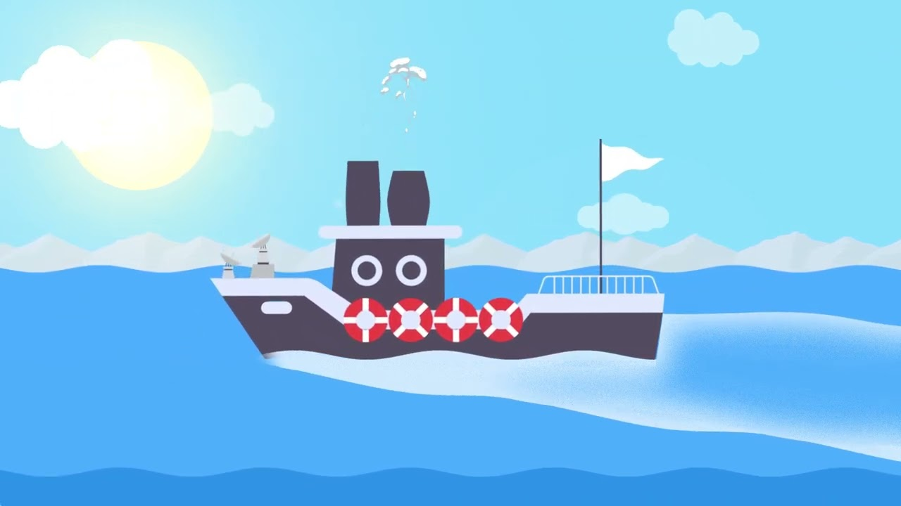
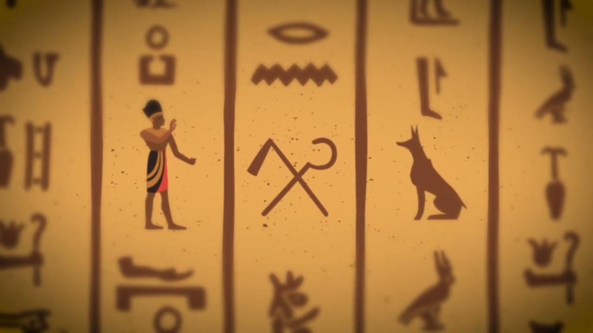
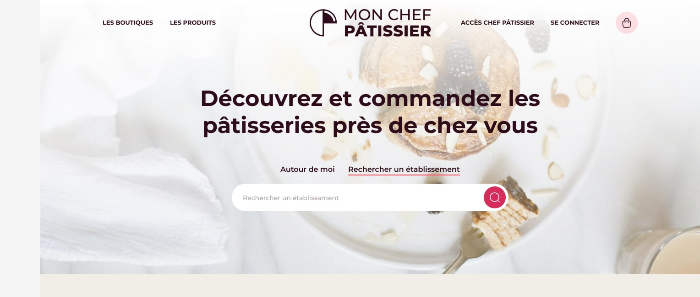
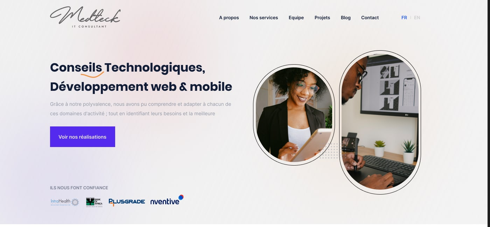
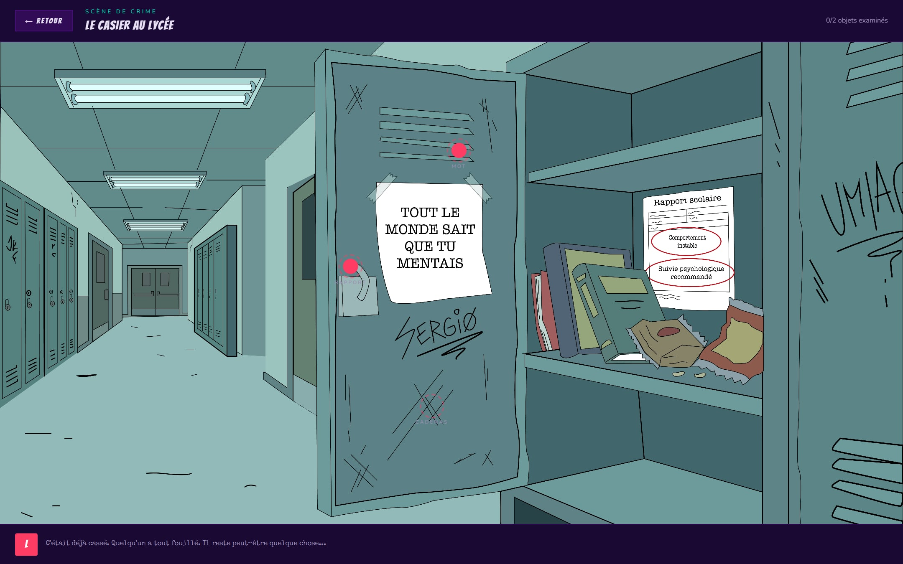

Le Joola
Court métrage documentaire sur le naufrage du Joola, l'une des plus grandes tragédies maritimes de l'histoire du Sénégal.
Voir le projet →Une sélection de projets en vidéo, motion design, UX/UI et web, par catégorie de spécialisation.
Court métrage documentaire sur le naufrage du Joola, l'une des plus grandes tragédies maritimes de l'histoire du Sénégal.
Voir le projet →
Exercice de montage d'une minute : recomposer des séquences de trois films différents en une seule histoire rythmée.
Voir le projet →Application mobile complète pour un festival de films documentaires en Gaspésie : programmation, billetterie, hébergement et communauté.
Voir le projet →
Animation d'un bateau à vapeur en vectoriel, dans une ambiance calme : projet solo (After Effects, Illustrator, Audition).
Voir le projet →
Balado illustré qui raconte les événements passés de Narmer et Ménès : projet solo (After Effects, Illustrator, Audition).
Voir le projet →Application mobile fictive de commande de repas : projet solo pour maîtriser les bases du UX/UI et de l'accessibilité.
Voir le projet →
Site fictif de pâtisseries artisanales avec commande en ligne : projet solo axé UX/UI et accessibilité.
Voir le projet →
Design d'interface pour le site d'une entreprise de consulting technologique.
Voir le projet →
Site web d'un musée : projet de groupe où j'ai assuré l'intégration web.
Voir le projet →
Jeu d'enquête narratif jouable dans un navigateur : intégration et développement complets, design par mon coéquipier.
Voir le projet →
Teaser de 30 secondes : montage dynamique, étalonnage et habillage graphique.
Voir le projet →Aucun projet dans cette catégorie pour l'instant — d'autres arrivent bientôt.